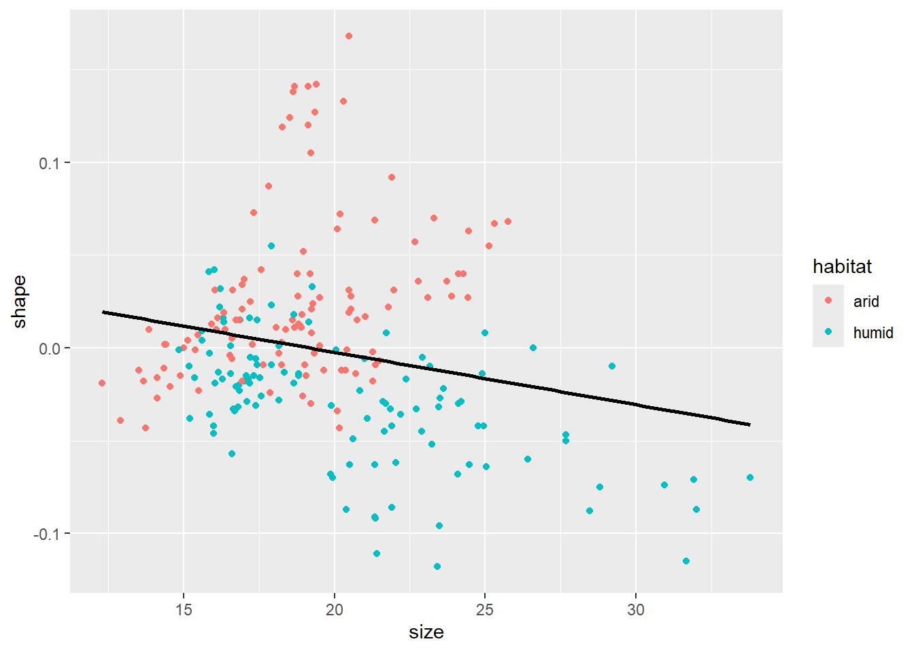
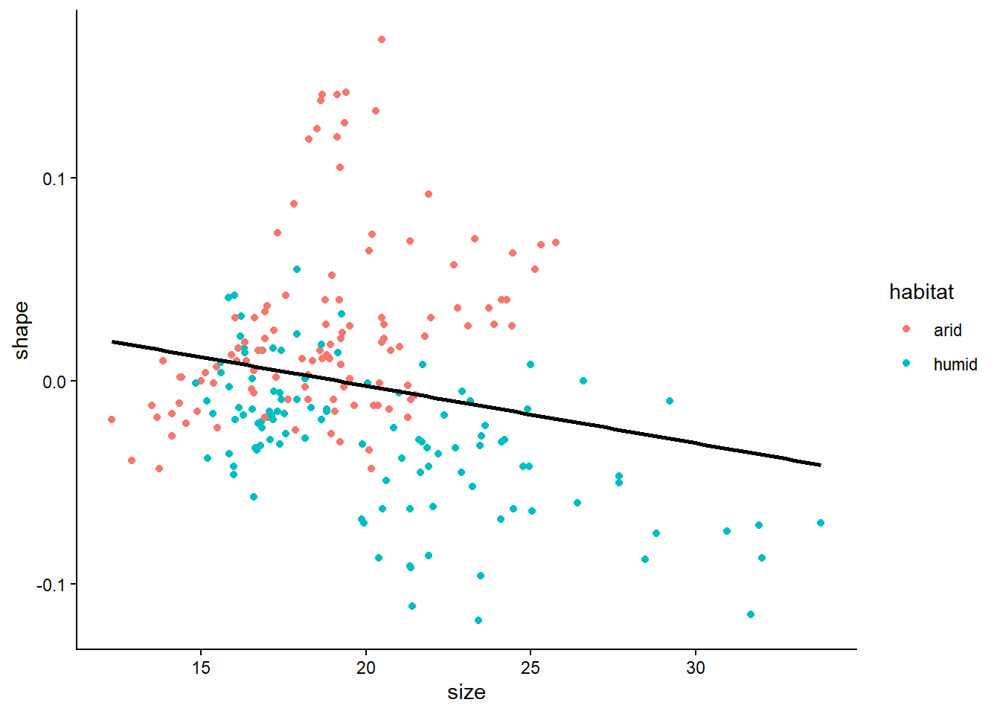
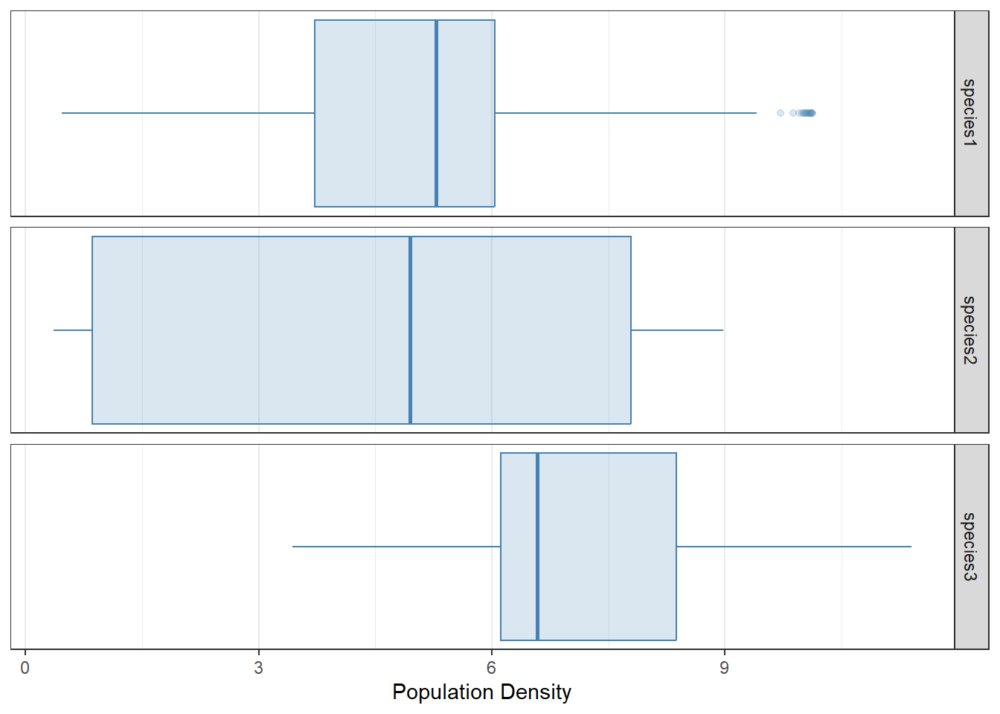
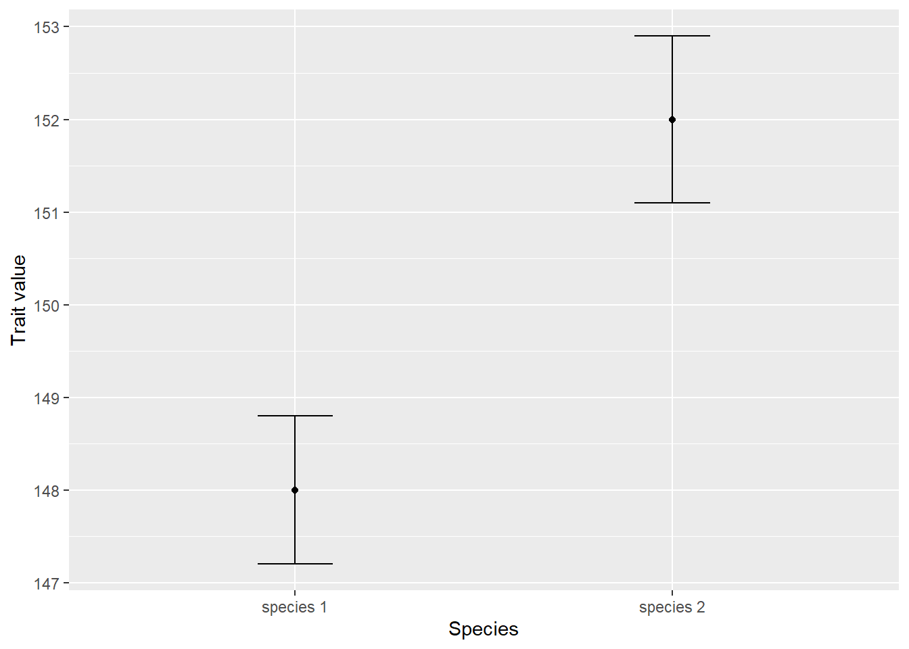

8Some further plotting options; introducing factors
In this chapter we look at adding themes to out plots, manipulating scales (x- and y-axes, color, fill, and so on), faceting to create subplots within a bigger plot, and the plotting of summaries. We keep working with the land snail data:
The default appearance of a plot created with ggplot is with a gray background and white panel grids going through it to aid locating coordinates. Here is the plot we ended Chapter 7 with, where these features are clearly visible:
snails |>ggplot(aes(x = size, y = shape)) +geom_point(aes(color = habitat)) +geom_smooth(method = lm, se =FALSE, color ="black")
The general theme can be changed by adding one of the functions starting with theme_ to the plot. For example, theme_bw is a theme which uses a white background instead of the default gray:
snails |>ggplot(aes(x = size, y = shape)) +geom_point(aes(color = habitat)) +geom_smooth(method = lm, se =FALSE, color ="black") +theme_bw()

And theme_classic omits the panel grid lines, as well as the box from around the plot:
snails |>ggplot(aes(x = size, y = shape)) +geom_point(aes(color = habitat)) +geom_smooth(method = lm, se =FALSE, color ="black") +theme_classic()
Feel free to check out the built-in themes (theme_gray is the default). Additionally, the ggthemes package has many further options as well.
Further fine-tuning of a theme can be achieved using the theme function. For example, the default position of the color legend is at the right side of the plot. One can move the legend to another position by specifying the legend.position option within the theme function that can be added onto the plot:
snails |>ggplot(aes(x = size, y = shape)) +geom_point(aes(color = habitat)) +geom_smooth(method = lm, se =FALSE, color ="black") +theme(legend.position ="bottom") # Or: "top", "left", "right", "none"

Specifying legend.position = "none" omits the legend altogether.
A word of caution: in case the legend positioning is matched with a generic theme such as theme_bw(), one should put the legend position after the main theme definition. The reason is that pre-defined themes like theme_bw() override any specific theme options you might specify. The rule of thumb is: any theme() component to your plot should be added only after the generic theme definition. Otherwise the theme() component will be overridden and will not take effect. For example, this does not work as intended:
snails |>ggplot(aes(x = size, y = shape)) +geom_point(aes(color = habitat)) +geom_smooth(method = lm, se =FALSE, color ="black") +theme(legend.position ="bottom") +# Position legend at the lefttheme_bw() # Define general theme - and thus override the line above...
But this one does:
snails |>ggplot(aes(x = size, y = shape)) +geom_point(aes(color = habitat)) +geom_smooth(method = lm, se =FALSE, color ="black") +theme_bw() +# This defines the general themetheme(legend.position ="bottom") # Now override default legend positioning
8.2 Scales
The aesthetic mappings of a graph (x-axis, y-axis, color, fill, size, shape, alpha, …) are automatically rendered into the displayed plot, based on certain default settings within ggplot2. These defaults can be altered, however. Consider the following bare-bones plot:
snails |>ggplot(aes(x = habitat, y = shape)) +geom_boxplot()
We can now change, for example, how the y-axis is displayed. The component to be added to the plot is scale_y_continuous(). Here scale means we are going to change the scaling of some aesthetic mapping, y refers to the y-axis (as expected, it can be replaced with x, color, fill, etc.), and continuous means that the scaling of the axis is not via discrete values (e.g., either 1 or 2 or 3 but nothing in between), but continuous (every real number is permissible along the y-axis). The plot component scale_y_continuous() takes several arguments; take a look at its help page to see all possible options. Here we mention a few of them. First, there is the name option, which is used to relabel the axis. The limits argument accepts a vector of two values, containing the lower and upper limits of the plot. If any of them is set to NA, the corresponding limit will be determined automatically. Next, the breaks argument controls where the tick marks along the axis go. It is given as a vector, with its entries corresponding to the y-coordinates of the tick marks. Finally, labels determines what actually gets written on the axis at the tick mark points—it is therefore also a vector, its length matching that of breaks.
As an example, let us scale the y-axis of the previous graph in the following way. The axis label should read “Shell shape”, instead of the current “shape”. It should go from -0.17 to 0.17, with breaks at the values -0.15, 0, and 0.15. Here is how to do this:
What should we do if we would additionally like the “0.00” in the middle to be displayed as just a “0” instead, without hte unnecessary decimals? In that case, we can add an appropriate labels option as an argument to scale_y_continuous:
The labels are given as character strings, defining the text that should be written at each tick mark specified by breaks.
The x-axis can be scaled similarly. One important difference though is that here the x-axis has a discrete scale. Since we are displaying habitat type along it, any value must be either arid or humid; it makes no sense to talk about what is “halfway in between arid and humid”. Therefore, one should use scale_x_discrete(). Its options are similar to those of scale_x_continuous(). For instance, let us override the axis label, writing Habitat with a capital H:
Other aesthetic mappings can also be adjusted, such as color, fill, size, or alpha. One useful way to do it is through scale_color_manual(), scale_fill_manual(), and so on. These are like scale_color_discrete(), scale_fill_discrete() etc., except that they allow one to specify a discrete set of values by hand. Let us do this for color and fill:
The choice of colors was not arbitrary: the dry yellow-gold color "goldenrod" corresponds to the arid, while the moist "steelblue" color to the humid habitats. As mentioned in Section 7.3.2, one can look at the various color options in R at https://r-charts.com/colors. Additionally, a useful R color cheat sheet can be found here, for more options and built-in color names.
8.3 Facets
Plots can be faceted (subplots created and arranged in a grid layout) based on some variable or variables. For instance, let us create histograms of shell shapes in the snails dataset:
This way, one cannot see which part of the histogram belongs to which habitat. One fix to this is to color the histogram by habitat. Another is to separate the plot into two facets, each displaying data for one of the habitats only:
The function call facet_wrap(~ habitat) means that the data will be grouped based on habitat, and displayed separately in distinct subplots. The subplots are arranged in a regular grid, first side by side, and then wrapping around to the next row of facets if needed (hence the name facet_wrap). One can control the number of rows and/or columns of facets using the nrow and ncol arguments. For example, to display the facets on top of one another instead of side by side:
In this particular case, one can argue that this way of displaying the data is better, because it makes the two shell shape distributions share the same x-axis. This makes them directly comparable. Thus, it is immediately obvious that shell shapes are larger in the arid than in the humid regions, which is not immediately visible when the facets are next to one another.
It is also possible to create facets where two, instead of just one, variables control what goes in each facet. The first variable then controls what gets displayed in the rows, the other controls what gets displayed in the columns. To illustrate how to make such a two-dimensional grid of facets, let us first apply pivot_longer to the snails dataset:
(We specified the columns for pivoting via size | shape, meaning that any column called either size or shape gets selected—that is, only those two are chosen in the end. See Section 5.1.1 to review the various tidy selection mechanisms for choosing columns.) We can create a histogram of each measured trait in each habitat now, in a remarkably simple way, by using the facet_grid function:
Here facet_grid(habitat ~ trait) means that the data will be grouped based on columns habitat and trait, with the distinct values of habitat making up the rows and those of trait the columns of the grid of plots. Also, if one of them would be replaced with a dot, as in e.g. facet_grid(habitat ~ .), then that variable is ignored, and only the other variable is used in creating the subplots.
The above plot is not satisfactory. This is because shell size and shell shape are measured on vastly different scales. Therefore it would be better to use different x-axes for the two facet columns. This can be achieved by adding the scales = "free_x" argument to facet_grid:
In a similar manner, scales = "free_y" is also a valid option (making the y-axes across facet rows vary individually), as is scales = "free" (both x- and y-axes vary across facet columns and rows). The default setting, which uses the same axes for all facet rows and columns, is scales = "fixed".
8.4 Summaries and confidence intervals
Providing appropriate information on experimental errors is a hallmark of any credible scientific graph. Choose a type of error based on the conclusion that you want the reader to draw. For example, one can show the largest and smallest values in the dataset apart from the average.
Here we will display the median shell shape in each habitat (the value such that exactly half the data points have a smaller and half have a larger shape measurement), together with the smallest and largest values. To do so, we first obtain the median, minimum, and maximum of the shell shapes in each habitat. So we first group_by habitat and summarize to obtain the required statistics (medians, minima, and maxima). We then hand these data over for plotting. One can include all these steps in a single logical workflow:
snails |>group_by(habitat) |># Perform summary calculations for each habitatsummarize(medianShape =median(shape), # Median shapeminShape =min(shape), # Minimum shapemaxShape =max(shape)) |># Maximum shapeungroup() |># Ungroup data# Start plotting:ggplot(aes(x = habitat, y = medianShape,ymin = minShape, ymax = maxShape)) +geom_point() +# This takes the y aesthetic, for plotting the mediangeom_errorbar(width =0.2) # Takes the ymin and ymax aesthetics
(The geom_errorbar function generates the ranges, going from ymin to ymax. Its width parameter controls how wide the horizontal lines at the ends of the whiskers should be.) Note that the y-axis label is neither as pretty nor as descriptive as it could be. This is because it inherited the name of the corresponding data column, medianShape. But we are not only displaying the median; we are also showing the full range of the data. So let us override this name. This could be done by adding scale_y_continuous(name = "median with full range") to the plot. But since we only want to adjust the axis label and not any of the other properties of the axis, there is a simpler alternative using the labs function:
snails |>group_by(habitat) |># Perform summary calculations for each habitatsummarize(medianShape =median(shape), # Median shapeminShape =min(shape), # Minimum shapemaxShape =max(shape)) |># Maximum shapeungroup() |># Ungroup data# Start plotting:ggplot(aes(x = habitat, y = medianShape,ymin = minShape, ymax = maxShape)) +geom_point() +# This takes the y aesthetic, for plotting the mediangeom_errorbar(width =0.2) +# Takes the ymin and ymax aestheticslabs(y ="median with full range")

Another way of characterizing uncertainty is to turn away from the spread of values in the actual raw data and instead focus on the uncertainty of an estimated quantity such as the mean. The rest of this subsection shows how to calculate confidence intervals for estimated means, and is intended for those who are already familiar with some basic statistical concepts. Alternatively, this section can be referred back to after reading the second part of the book.
In case we want to calculate the 95% confidence intervals of the mean values, we first obtain some necessary summary statistics: the number of observations (sample size) in each group; the standard error of the mean (standard deviation divided by the square root of the sample size); and finally, the confidence interval itself (read off from the quantile function of the t-distribution, with one fewer degrees of freedom than the sample size). We can then include these confidence intervals on top of the mean values:
snails |>group_by(habitat) |>summarize(mean =mean(shape), # Mean shape in each habitatsd =sd(shape), # Standard deviation per habitatN =n(), # Sample size (number of observations) per habitatSEM = sd /sqrt(N), # Standard error of the meanCI = SEM *qt(1-0.025, N -1)) |># Confidence interval,# read off at 1 - 0.025 because +/- 2.5% adds up to 5%ungroup() |>ggplot(aes(x = habitat, y = mean, ymin = mean - CI, ymax = mean + CI)) +geom_point() +geom_errorbar(width =0.2) +labs(y ="mean shell shape, +/- 95% confidence interval")
In the literature, it is common to encounter bar-and-whisker plots to represent the same information as above. These replace the points showing the means with bars that start from zero. One should be aware of how to read and make such graphs. This is almost trivially simple: all one needs to do is replace geom_point with geom_col.
snails |>group_by(habitat) |>summarize(mean =mean(shape), # Mean shape in each habitatsd =sd(shape), # Standard deviation per habitatN =n(), # Sample size (number of observations) per habitatSEM = sd /sqrt(N), # Standard error of the meanCI = SEM *qt(1-0.025, N -1)) |># Confidence interval,# read off at 1 - 0.025 because +/- 2.5% adds up to 5%ungroup() |>ggplot(aes(x = habitat, y = mean, ymin = mean - CI, ymax = mean + CI)) +# Below we change geom_point to geom_col (for "column"):geom_col(fill ="steelblue") +geom_errorbar(width =0.2) +labs(y ="mean shell shape, +/- 95% confidence interval")
Warning
While means and their confidence intervals are often displayed with bar-and-whisker plots, there is an important reason why this is not a good idea. By starting the bars from zero, the plot implies that zero is a natural point of comparison for all the data. Unfortunately, this can visually distort the information we wish to convey. Consider the following graph:
It is impossible to see whether there are any relevant differences between the two species. The following is exactly the same, but with the mean values shown with points instead of bars:
tibble(Species =c("species 1", "species 2"),Average =c(148, 152),CI =c(0.8, 0.9)) |>ggplot(aes(x = Species, y = Average,ymin = Average - CI, ymax = Average + CI)) +geom_point() +geom_errorbar(width =0.2) +labs(y ="Trait value")
It is now obvious that the two observations are distinct. Due to this problem, when plotting groups of continuous variables side by side, it is recommended to avoid bar-and-whisker plots and simply use point-and-whisker plots instead.
8.5 Reordering labels using factors
In the previous examples, the order of text labels was always automatically determined. The basic rule in R is that the ordering follows the alphabet: the default is for the arid habitat to precede humid. This default ordering can be inconvenient, however. Consider the data file temp-Lin.csv of average temperatures per month, measured in the town of Linköping, Sweden:
read_delim("temp-Lin.csv", delim =",")
# A tibble: 12 × 2
month temp_C
<chr> <dbl>
1 Jan -1.9
2 Feb -1.7
3 Mar 0.9
4 Apr 6.3
5 May 11.5
6 Jun 15.4
7 Jul 17.9
8 Aug 16.6
9 Sep 12.8
10 Oct 7.5
11 Nov 3.4
12 Dec 0.1
The table has two columns: month and temp_C, giving the mean temperature in each month across years 1991-2021.1 So far so good. However, if we plot this with months along the x-axis and temperature along the y-axis, we run into trouble because R displays items by alphabetical instead of chronological order:
read_delim("temp-Lin.csv", delim =",") |>ggplot(aes(x = month, y = temp_C)) +geom_point(color ="steelblue") +labs(y ="average temperature (Celsius)") +theme_bw()

To fix this, one must convert the type of month from a simple vector of character strings to a vector of factors. Factors are categorical variables (i.e., take on well-defined distinct values instead of varying on a continuous scale like double-precision numbers), but with an extra attribute which determines the order of those values. This ordering is often referred to as the levels of the factor. The first of the values has level 1, the next one level 2, and so on.
One very convenient way of assigning factor levels is through the tidyverse function as_factor.2 This function takes a vector of values and, if the values are numeric, assigns them levels based on those numerical values. However, if the values are character strings, then the levels are assigned in order of appearance within the vector. This is perfect for us, because the months are in proper order already within the tibble:
read_delim("temp-Lin.csv", delim =",") |>mutate(month =as_factor(month)) |>ggplot(aes(x = month, y = temp_C)) +geom_point(color ="steelblue") +labs(y ="average temperature (Celsius)") +theme_bw()
It is also possible to take a factor and reassign its levels manually. This can be done with the fct_relevel function:
Also, the use of fct_relevel need not be this laborious. If all we want to do is place a few factor levels to be first ones without changing any of the others, it is possible to enter just their names. Often, for example, a factor column holds various experimental treatments, one of which is called "control". In that case, all we might want to do is to make the control be the first factor level, without altering any of the others. If treatment is the name of the vector (or column in a data frame) that holds the different experimental treatment names, then this can be done with fct_relevel(treatment, "control").
8.6 Exercises
Let us revisit the data of Fauchald et al. (2017) which we used in Section 7.5, tracking the population size of various herds of caribou in North America over time and correlating population cycling with the amount of vegetation and sea-ice cover. Using the file sea_ice.tsv (sea ice cover per year and month for each caribou herd), do the following:
One exercise from Section 7.5 was to plot Year along the x-axis and Month along the y-axis, with color tile shading indicating the level of ice cover for the herd labeled WAH in each month-year pair (using geom_tile). The resulting graph had an obvious weakness: the months along the y-axis were not in proper chronological order. Fix this problem by converting the Month column from character strings to factors whose levels go from January to December.
Create a similar plot, but do not filter for one single herd. Instead, have each herd occupy a different facet (sub-plot). Try doing this both with facet_grid and facet_wrap. Which do you like better, and why?
For each herd, compute the mean, the minimum, and the maximum cover over the full time span of the data. Then plot herd along the x-axis, and the mean (using points) plus the range (using error bars) along the y-axis.
The remaining exercises use the Galápagos land snail data (Section 4.2.2).
Create a plot with standardized size along the x-axis (you can review what standardization means in Section 5.1.3), standardized shape along the y-axis, each individual represented by a point colored by species, and with two facets corresponding to humid and arid habitat types. The facets should be side by side. How does this figure influence the interpretation you had in Section 7.5, exercise 15? That is: does the splitting of communities based on habitat type increase or decrease the overlap between different species?
Re-create the previous plot with the two side-by-side facets, but in reverse order: the humid facet should be on the left and arid on the right. (Hint: convert habitat to factors!)
Fauchald, Per, Taejin Park, Hans Tømmervik, Ranga Myneni, and Vera Helene Hausner. 2017. “Arctic greening from warming promotes declines in caribou populations.”Science Advances 3 (4): e1601365. https://doi.org/10.1126/sciadv.1601365.
There also exists a similarly-named function called as.factor, in addition to as_factor. It is the base R version of the same functionality. As usual, the tidyverse version offers improvements over the original, so it is recommended not to use as.factor at all, relying on just as_factor instead.↩︎